SnapInflatable
May 2024
Yue Yang, Lei Ren, Chuang Chen, Bin Hu, Zhuoyi Zhang, Xinyan Li, Yanchen Shen, Kuangqi Zhu, Junzhe Ji, Yuyang Zhang, Yongbo Ni, Jiayi Wu, Qi Wang, Jiang Wu, Lingyun Sun, Ye Tao, Guanyun Wang*
Snap-through instability, like the rapid closure of the Venus flytrap, is gaining attention in robotics and HCI. It offers rapid shape reconfiguration, self-sensing, actuation, and enhanced haptic feedback. However, conventional snap-through structures face limitations in fabrication efficiency, scale, and tunability. We introduce SnapInflatables, enabling safe, multi-scale interaction with adjustable sensitivity and force reactions, utilizing the snap-through instability of inflatables. We designed six types of heat-sealing structures enabling versatile snap-through passive motion of inflatables with diverse reaction and trigger directions. A block structure enables ultra-sensitive states for rapid energy release and force amplification. The motion range is facilitated by geometry parameters, while force feedback properties are tunable through internal pressure settings. Based on experiments, we developed a design tool for creating desired inflatable snap-through shapes and motions, offering previews and inflation simulations. Example applications, including a self-locking medical stretcher, interactive animals, a bounce button, and a large-scale light demonstrate enhanced passive interaction with inflatables.
Publication: ACM CHI Conference on Human Factors in Computing Systems 2024， Full Paper
Award: Design Intelligence Award 2024, Honorable Mention Award
 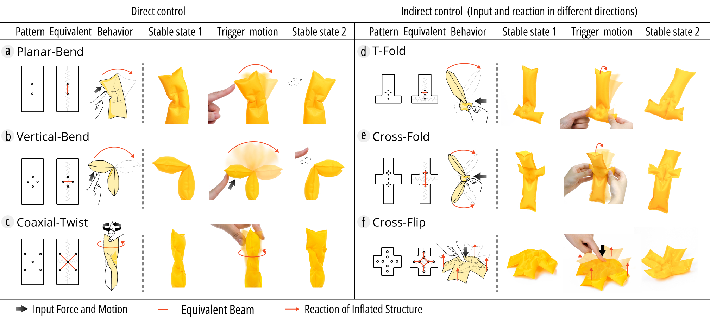
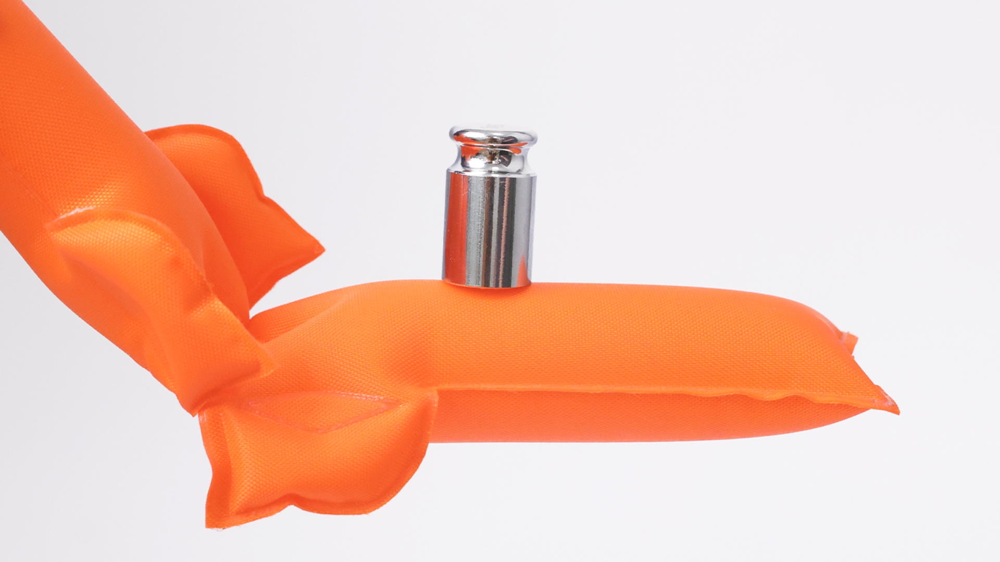
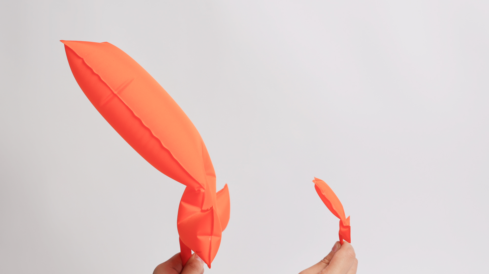
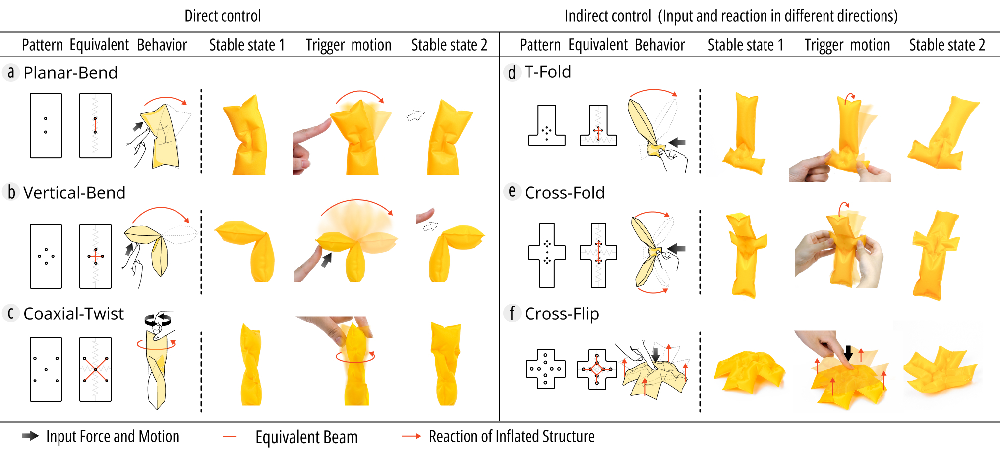
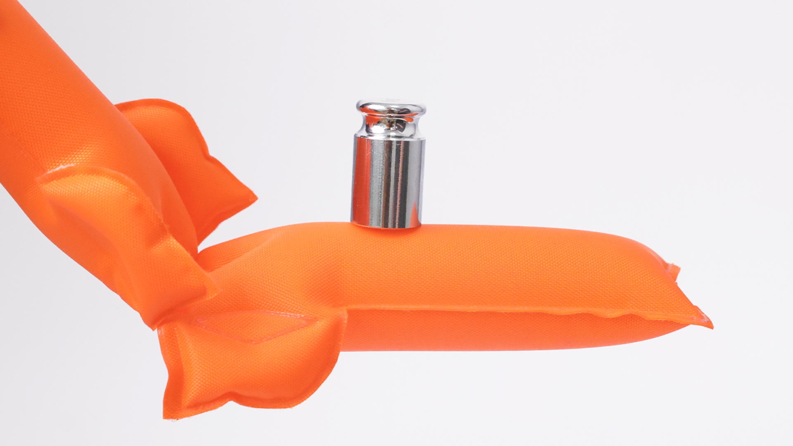
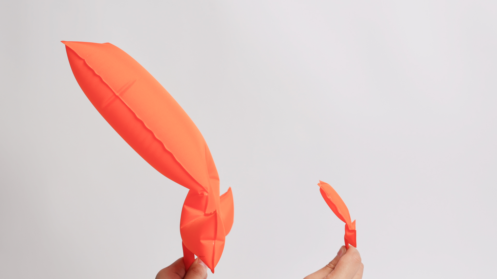
 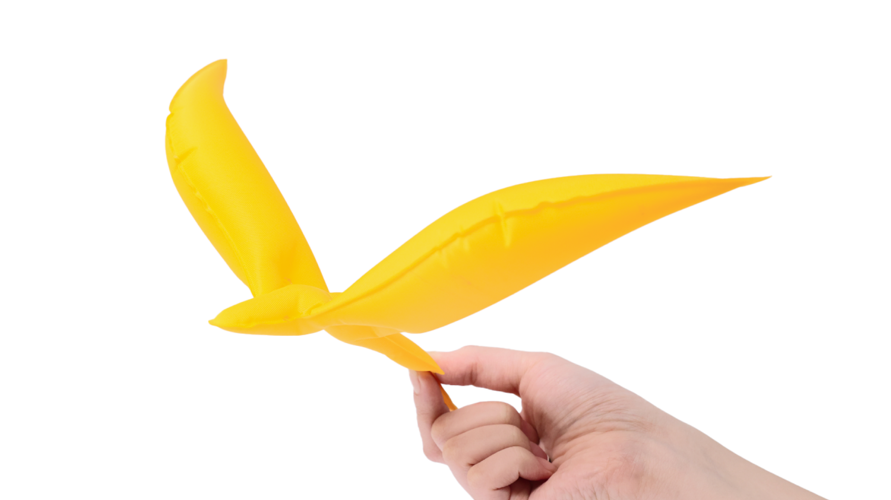
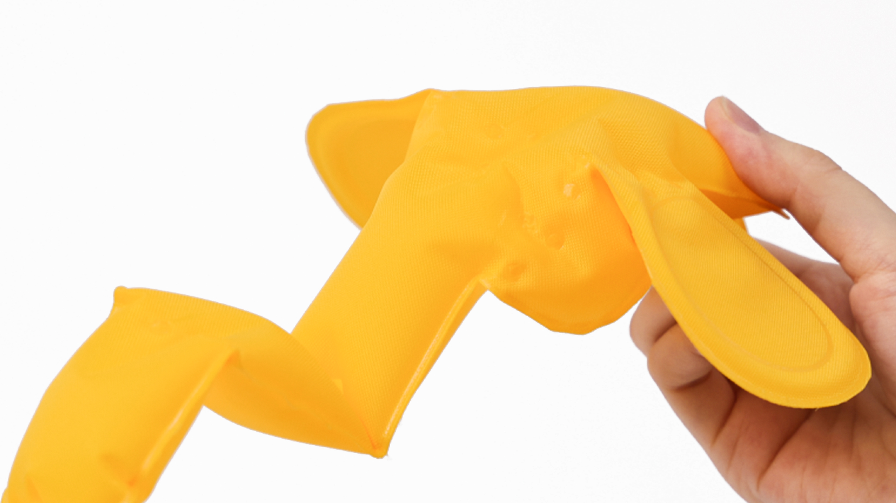
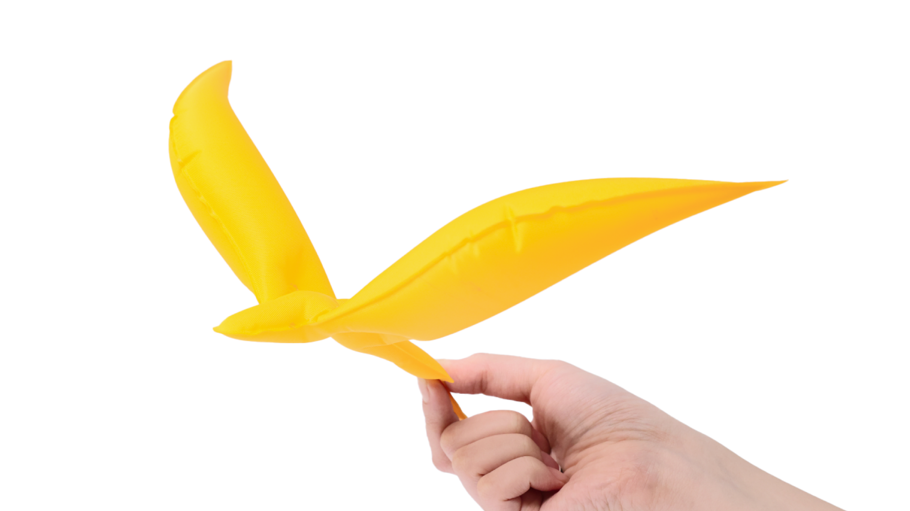
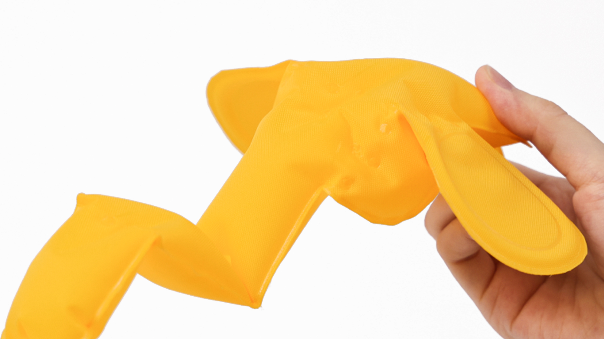
 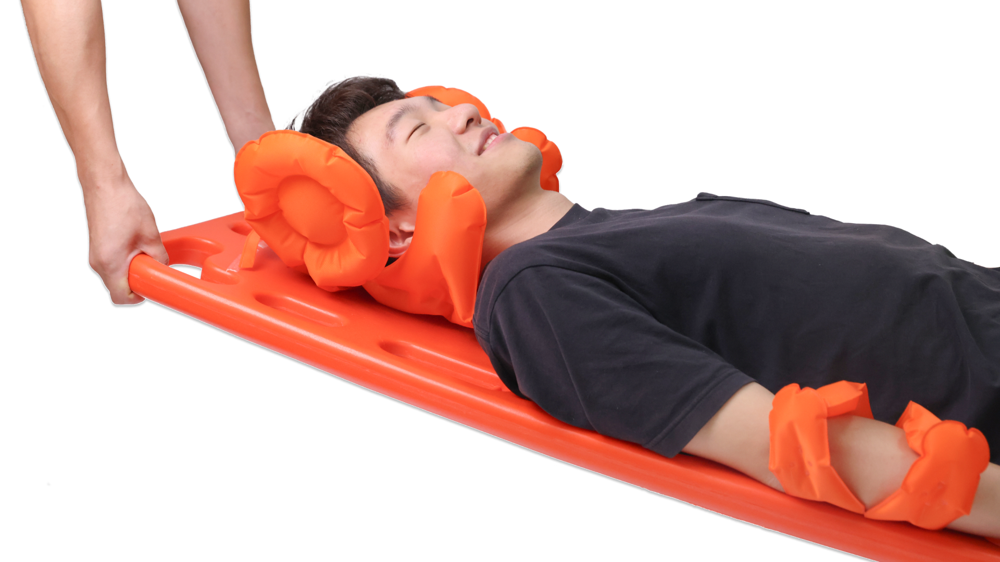
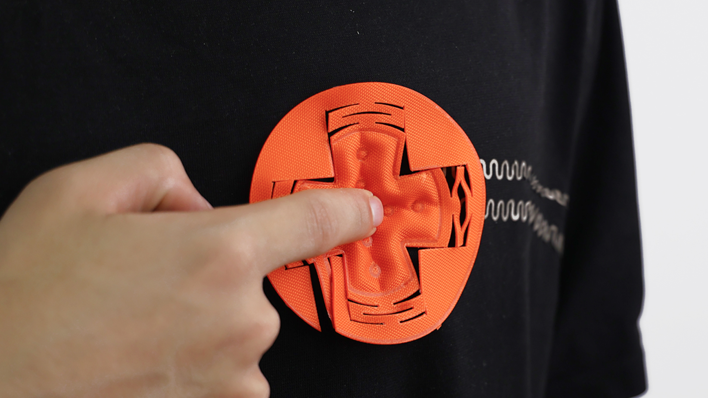
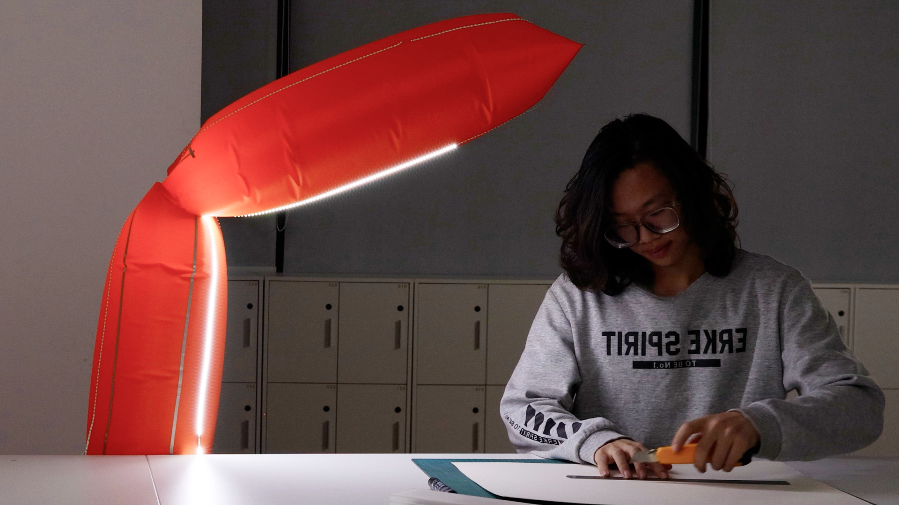
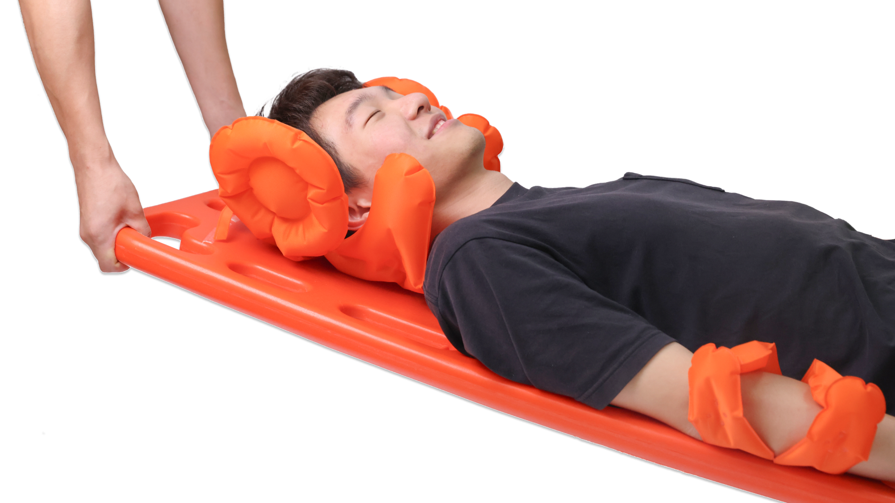
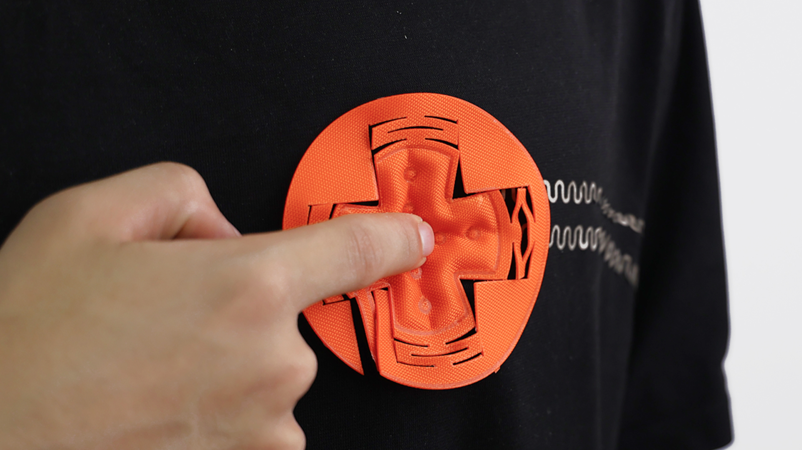
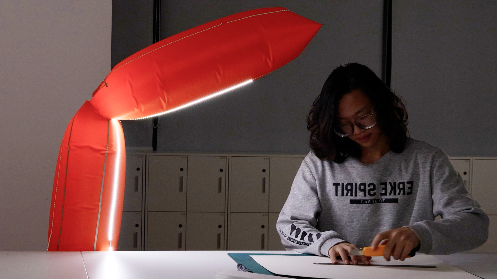